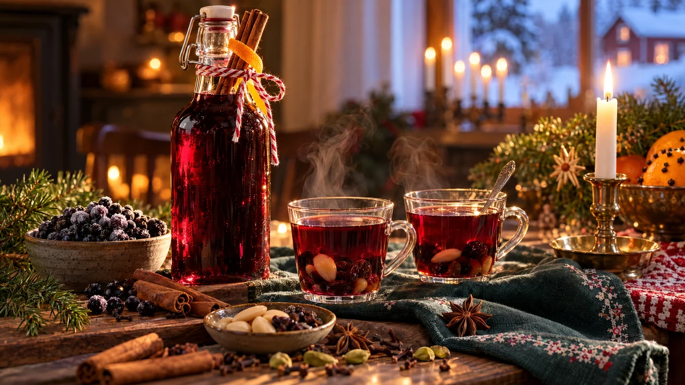

RESTFEST · RECEPTSylt, saft & inlagt · Dryck
Glöggsaft på frysta svartvinbär
En påse frysta svartvinbär och kryddhyllans kanel, nejlika, kardemumma och ingefära kokas till en djupt mörkröd, kryddig saft som doftar jul. Späd den med hett vatten och servera med russin och mandel, så har du alkoholfri glögg på en minut. I en vacker flaska blir den adventstidens finaste värdinnepresent.
- Förberedelse
- 10 min
- Tillagning
- 20 min + 30 min dragtid
- Portioner
- ca 1 liter saft (ca 3 liter färdig glögg)
- Nivå
- Nybörjare
Bra att veta. Diska burkar, flaskor och lock noga och skålla dem med kokande vatten precis före användning, eller värm glaset i ugnen på 125 grader i 10 minuter. Fyll dem medan innehållet är varmt och skruva på locket direkt. Förvara öppnade burkar i kylen och använd alltid en ren sked.
 Det här behöver du
Det här behöver du
Tryck på + vid det du behöver köpa.
Saft
Till servering
Gör så här
- Lägg bär, vatten och alla kryddor i en kastrull. Koka upp och låt sjuda under lock i 15 minuter. Mosa bären lätt med en potatisstöt.
- Ta kastrullen från värmen och låt dra i 30 minuter, så blir kryddsmaken djupare.
- Sila genom en sil klädd med en ren kökshandduk eller ett kaffefilter. Låt saften rinna igenom i lugn och ro och pressa inte för hårt, då blir den grumlig.
- Mät saften och häll tillbaka den i kastrullen. Tillsätt 5 dl socker per liter saft och värm under omrörning tills sockret har löst sig. Låt den bara precis koka upp.
- Skumma av ytan och häll den varma saften i skållade flaskor. Skruva på korken direkt.
Dekoration och servering
- Späd 1 del saft med 2 delar hett vatten och servera i små glas eller koppar med några russin och mandlar i botten.
- Ställ flaskan på bordet med en kanelstång och en apelsinskalsremsa i halsen, eller knyt ett band runt den och ge bort den.
- För vinglögg, blanda 1 del saft med 2 delar rött vin och värm utan att koka.
- Saften går också att använda till glöggpäronen i recept 64.
- Saften håller ca 1 månad i kylen. Frys den i plastflaskor, med lite plats kvar upptill, så håller den i ett år.
Mått och ugnstemperaturer
Måtten är svenska (dl, msk, tsk, krm). Ugnstemperaturerna gäller vanlig ugn med över- och undervärme; med varmluft, sänk med 20 grader.